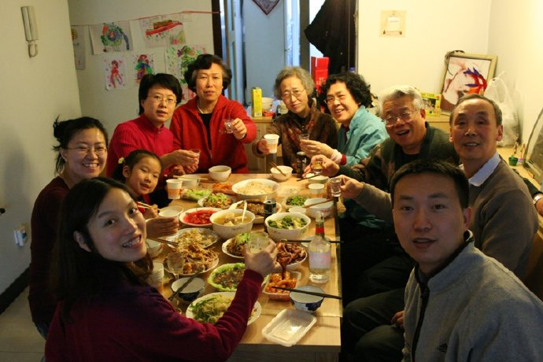
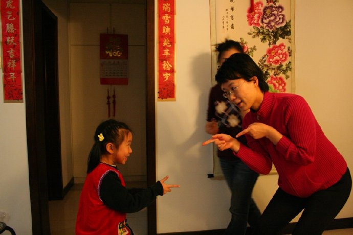

又过年了。过年是家人幸福团聚的时刻，也是让人感慨流年似水的时刻。幸亏还有孩子成长的笑脸，提醒我们光阴没有虚度。小时候期盼过年的热闹，长大了以后觉得过年象鸡肋，宁愿跑出去旅游，这两年才开始觉得过年就是要大家热热闹闹的聚在一起，尽情的吃喝玩乐。是我已经老了吧？
今年过年家里很热闹。曼曼的爷爷、奶奶、姑姑、姑父、姑父的爸爸妈妈、还有一个哈尔滨的大姐姐和大姐姐的妈妈都到我们家过年，11口人，把喜欢热闹的曼曼给兴奋的，像个小猴一样窜来窜去，内心得到极大的满足。希望小曼曼也可以感受到过年时的亲情洋溢，保留童年最快乐的回忆。

